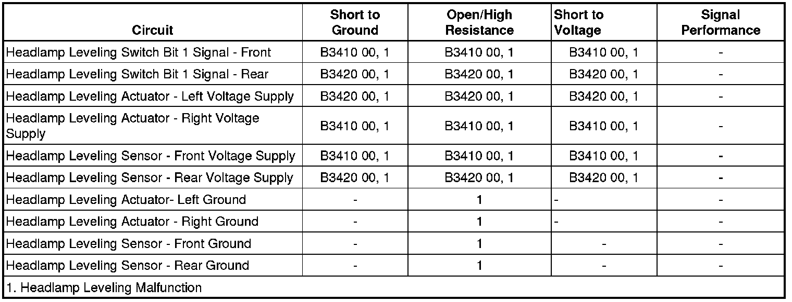

Headlamp Leveling Malfunction
Headlamp Leveling Malfunction
Diagnostic Instructions
* Perform the Diagnostic System Check - Vehicle (Initial Inspection and Diagnostic Overview) prior to using this diagnostic procedure.
* Review Strategy Based Diagnosis (Initial Inspection and Diagnostic Overview) for an overview of the diagnostic approach.
* Diagnostic Procedure Instructions (Initial Inspection and Diagnostic Overview)provides an overview of each diagnostic category.
Diagnostic Fault Information

Circuit/System Description
The front suspension position sensor provides the headlamp leveling modules with front suspension position information. The sensor is permanently grounded and has voltage supplied with the ignition in the ON or CRANK position. The sensor arm is connected to the control arm of the front suspension. As the vehicle travels, the suspension compresses and rebounds moving the suspension position sensor arm. This causes the signal output of the sensor to change. The headlamp leveling modules compare this information with the rear suspension position sensor information and adjusts the headlamp leveling as needed.
Diagnostic Aids
Important: When one of the suspension position sensor voltage reference or sensor signal circuits are shorted to ground, it may not be possible to determine which suspension position sensor voltage reference or sensor signal circuits, front or rear, has failed. If this condition occurs, all suspension position sensor voltage reference and sensor signal circuits will have to be tested for a short to ground.
Reference Information
Schematic Reference
Headlight Leveling Schematics (Headlight Leveling Schematics)
Connector End View Reference
Component Connector End Views (Connector Views)
Description and Operation
Exterior Lighting Systems Description and Operation (Exterior Lighting Systems Description and Operation)
Electrical Information Reference
* Circuit Testing (Component Tests and General Diagnostics)
* Connector Repairs (Component Tests and General Diagnostics)
* Testing for Intermittent Conditions and Poor Connections (Component Tests and General Diagnostics)
* Wiring Repairs (Component Tests and General Diagnostics)
Scan Tool Reference
Control Module References (Programming and Relearning)
Circuit/System Verification
Ignition ON, with a scan tool perform the headlamp motor test for the left and right headlamp leveling modules. The headlamp should move UP and DOWN as the test is performed.
Circuit/System Testing
1. Ignition OFF, disconnect the harness connector at the inoperative headlamp assembly.
2. Ignition OFF, scan tool OFF, exterior lamps OFF, test for less than 5.0 ohms of resistance between the ground circuit terminal M and ground.
• If greater than the specified range, test the ground circuit for an open/high resistance.
3. Ignition ON, test for B+ between the voltage circuit terminal H and ground.
• If less than the specified range, test the voltage circuit for a short to ground or an open/high resistance.
4. If all circuits test normal, replace the inoperative headlamp assembly.
Repair Instructions
Perform the Diagnostic Repair Verification (Verification Tests) after completing the diagnostic procedure.
* Headlamp Replacement (Service and Repair)
* Headlamp Aiming (Adjustments)
* Relay Replacement (Attached to Wire Harness) (Relay Replacement (Attached to Wire Harness))Relay Replacement (Within an Electrical Center) (Relay Replacement (Within an Electrical Center))
* Underhood Electrical Center or Junction Block Replacement (Service and Repair)
* Control Module References (Programming and Relearning)for headlamp leveling module replacement, setup, and programming